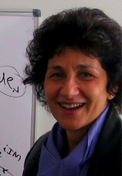

|
Andrea R. Nahmod Professor of Mathematics Tel. (413)
545-6031 nahmod(at)math dot umass dot edu
|
 |
|||||||||||||||||||||||||||
|---|---|---|---|---|---|---|---|---|---|---|---|---|---|---|---|---|---|---|---|---|---|---|---|---|---|---|---|---|---|
|
Challenges
in
Geometry, Analysis and Computation: High Dimensional
Synthesis
A
Conference in Honor of Ronald R.Coifman, Peter W. Jones
and Vladimir Rokhlin |
|||||||||||||||||||||||||||||
| Profile |
|||||||||||||||||||||||||||||
|
Click here for some more info.
|
|||||||||||||||||||||||||||||
| Research |
|||||||||||||||||||||||||||||
|
My research lies at the
overlap of Nonlinear
Fourier Analysis/Harmonic Analysis and Nonlinear Partial
Differential Equations integrating into it tools
from geometry, gauge theory and probability. In
recent years, its main focus has been to investigate: Here are some of my Papers and Preprints. |
|||||||||||||||||||||||||||||
| Teaching |
|||||||||||||||||||||||||||||
| AY 2013-2014: on sabbatical leave. |
|||||||||||||||||||||||||||||
| PhD Students |
|||||||||||||||||||||||||||||
| Nikolaos Tzirakis (PhD 2004) Nonlinear Dispersive PDEs. Tadahiro Oh (PhD 2007) Nonlinear Dispersive PDEs. Viktor Grigoryan (PhD 2008) Geometric Nonlinear PDEs. Allison Tanguay (PhD 2012) Nonlinear Fourier Analysis. |
|||||||||||||||||||||||||||||
| Capstone
Students |
|||||||||||||||||||||||||||||
| Adam Cardenal-Stakenas (2001-2002; REU and Capstone research semester) Research on Fourier analysis, wavelet theory and signal recognition. Nathan T. Senecal (2011-2012; REU and Capstone research year) Research on Fourier analysis, geometry and combinatorics Derek M. Wood (2011-2012; Capstone research year) Research on Harmonic analysis and nonlinear dispersive PDEs. Michael Breeling (2012-2013; Capstone research year) Research on Fourier analysis, geometry and combinatorics Domonic Mei (2012-2013; Capstone research year) Research on Fourier analysis and analystic number theory. |
|||||||||||||||||||||||||||||